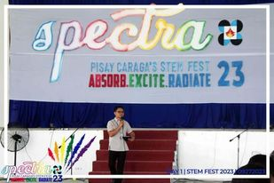

PSHS-CRC has clubs ranging from dibuho (art club) club to sports club to further develop the scholars, not just in the field of STEM, but also their individual skills and talents.
These clubs enhance the scholars’ talents in dancing and singing and further expand their creativity.
Let learning be not just from the board and classroom but also learn from fun and talents!
PSHS-CRC clubs list:
- Dibuho club
- Home economics club
- Glee club
- Performing arts club
- Robotics Club
- Indoor sports club
- Outdoor sports
- Debate club
The Philippine Science High School - Caraga Region Campus conduct field trips for scholars to further expand their knowledge and enhance the scholars’ learning experience.
In planning field trips, Pisay CRC ensure safety measures are in place, creates a fun learning experience for scholars, and that the field trips that will be conducted is align with the curriculum to further maximize its educational value.

Here at the Philippine Science High School - Caraga Region Campus celebrates the STEM festival. This event includes interactive exhibits, educational activities and contests that allows the students to engage and participate in hands-on learning experiences.
Additionally, this festival aims to inspire the students to take interest in STEM fields and motivate them to take a STEM related course.
This event is an eye opener for the scholars of PSHS-CRC to see the world of science, technology, engineering, and mathematics to prepare them for their STEM related course in the future.
PSHS-CRC celebrates intramurals with flying colors and meaningful experiences. This event unleashes students’ sportsmanship and hidden skills in sports.
Here in Pisay Caraga, intramurals offer opportunities for scholars to participate and have fun and engage with their batchmates and compete with other batches. Promoting physical fitness, teamwork, social interaction and good sportsmanship.
Pisay Caraga is here to showcase the scholars’ talents in music, singing, and dancing. As PSHS-CRC not just focuses on the intelligence of scholars but also their special talents of every individual.
Musical is one of the events that is held here in Pisay enhancing the scholars’ talent in performing and giving them a fun experience and meaningful memories here in Philippine Science High School - Caraga Region Campus.